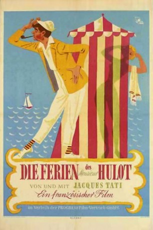

#7228 Die Ferien des Monsieur Hulot
Alternativ: Monsieur Hulot's Holiday (Englischer Titel)
Auszeichnungen: für 1 Oscars nominiert
 
 IMDB-Wertung: 7.6 / 10
IMDB-Wertung: 7.6 / 10  Metascore: 0
Metascore: 0 
Monsieur Hulot ist ein Kleinbürger, der seinen Urlaub in einer Pension in der Bretagne verbringt. Dort versucht er, mit den übrigen Gästen in Kontakt zu treten und sie zu unterhalten. Doch alle seine Bemühungen, sich mit den Gästen anzufreunden, führen zu Missgeschicken. Monsieur Hulot ist unsicher, tölpelhaft, immer im Widerstreit mit den Tücken der Technik und besitzt doch die Fähigkeit, die Welt neu für sich zu entdecken
Jahr: 1953
Dauer: 88 Minuten
FSK: 6
Land: Frankreich Studio: ArthausTonspuren:
Untertitel: Deutsch,
Auflösung: 1080p (1456x1080) Größe: 5591 MB
Genre: Komödie
Regisseur:  Jacques Tati
Jacques Tati
Drehbuch: Pierre Aubert
Soundtrack:
Darsteller:
- Jacques Tati als Monsieur Hulot
- André Dubois als Commandant
- Nathalie Pascaud als Martine
- Micheline Rolla als The Aunt
- Valentine Camax als Englishwoman
- Lucien Frégis als Hotel Proprietor
- Suzy Willy als Commandant's Wife
- Marguerite Gérard als Strolling Woman
- Louis Pérault als Fred
- Raymond Carl als Waiter
- René Lacourt als Strolling Man
- Édouard Francomme als Restaurant Patron
- Georges Adlin als South American , uncredited
- Pierre Aubert als The Young Intellectual , uncredited
- César Baldaccini als Bearded Camper , uncredited
- Michèle Brabo als Holidaymaker , uncredited
- Pierre Clauzel als Holidaymaker on Beach , uncredited
- Jacques Cottin als Holidaymaker on Beach , uncredited
- Madame Cottin als Hotel Guest , uncredited
- André Dino als Hotel Guest , uncredited
- Marcel Girard als Stable Boy , uncredited
- Daniel Marquet als Kid eating ice cream cone , uncredited
- Henri Marquet als Restaurant Patron in Striped Shirt , uncredited
- Bernard Maurice als Hotel Guest , uncredited
- André Pierdel als Holidaymaker on Beach , uncredited
Datei: X:\1950-1959\Ferien des Monsieur Hulot, Die (1953, FSK6, 1456x1080).mkv seit 09.10.2017
Festplatte: HD 1900-1970
 Es gibt insgesamt 141 Filme in der Gruppe '1950-1959'
Es gibt insgesamt 141 Filme in der Gruppe '1950-1959'